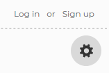
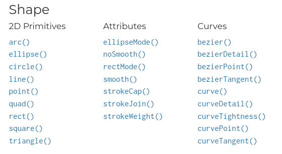
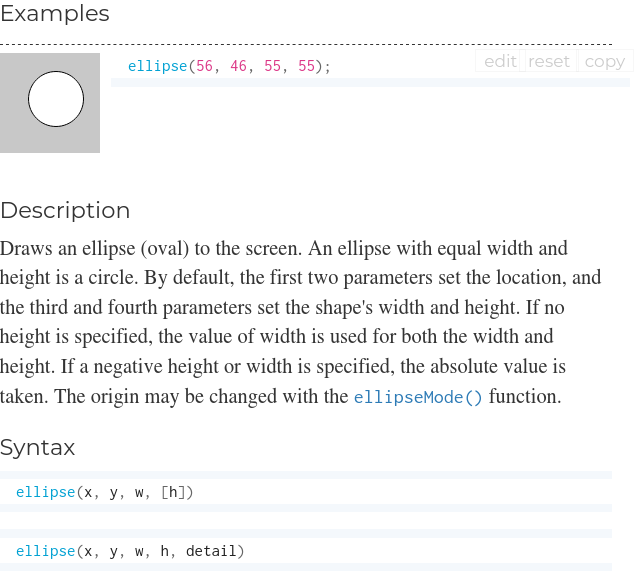
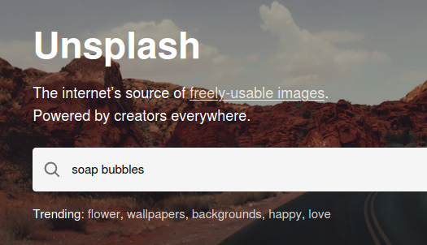
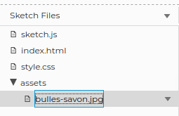
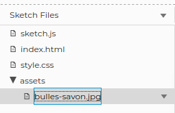

Petit défi pour découvrir les fonctions, créer un GIF et se rappeler que le savon, ça peut aussi servir à faire des bulles!
Commencer !Petit défi pour découvrir les fonctions, créer un GIF et se rappeler que le savon, ça peut aussi servir à faire des bulles!
Commencer !🗨️ For the english version click here!
Avant de t'attaquer à ce défi, on te conseille de compléter les défis suivants:
Première chose avant de commencer à travailler sur n'importe quel projet p5.js: connecte-toi à ton compte en cliquant sur "Log in".
Renomme ton projet en cliquant sur le petit crayon .
Ça semble bête à dire... mais n'oublie pas de te connecter à ton compte avant de commencer à travailler! Cela te permettra de sauvegarder gratuitement ton travail (tes sketchs) sur les serveurs de p5.js. Si tu ne le fais pas, tu dois alors télécharger les fichers localement (sur ton ordinateur) et s'il arrive quoique ce soit, tu risques de perdre tout ton travail 😢
En cliquant par ici, tu trouveras un aperçu de ce qu'on va coder. À vrai dire, tu viens de voir la solution du défi! Est-ce que c'est tricher? Pas du tout! Lire le code de devs plus avancés fait partie de l'apprentissage!
Ce code contient de nombreuses fonctions. Les fonctions servent à donner des instructions à l'ordinateur et sont très utiles pour ne pas avoir à répéter toujours les mêmes instructions. Tu utilises déjà plein de fonctions dans tes programmes. color(), par exemple, est une fonction qui permet de créer une couleur grâce à la librairie p5.js. ellipse() est une fonction qui dessine une ellipse (ou un cercle). Te souviens-tu de la fonction pour dessiner une ligne?
Eh oui, c'est line().
Tu as peut-être noté que lorsqu'on parle de fonctions, on ajoute des parenthèses ( ) après le nom de la fonction. C'est que les fonctions peuvent prendre des paramètres, que l'on va mettre entre les parenthèses. Voici un exemple:
textSize(50);
Entre les parenthèses, j'ai ajouté le nombre 50. Ce nombre représente la taille de mon texte. Si j'avais codé
textSize(100);
mon texte serait deux fois plus grand! Les paramètres sont importants car ils peuvent faire une grosse différence sur le résultat de ma fonction.
Certaines fonctions prennent plusieurs paramètres:
ellipse(150, 130, 100);
Ici, il y avait trois paramètres 150, 130 et 100. Finalement, certaines fonctions ne prennent aucun paramètre:
noStroke();
La fonction noStroke() ne prend pas de paramètres, mais on garde quand même les parenthèses pour indiquer que si la fonction prenait des paramètres, c'est là où ils iraient. Et puis, pour nous devs, c'est un bon indice pour savoir que c'est une fonction (et non pas une variable, par exemple).
La plupart du temps, on utilise des fonctions qui existent déjà dans la librairie p5.js. color(), noStroke(), ellipse(), etc. sont toutes des fonctions qui existent déjà!
Tu peux toujours vérifier si une fonction existe dans la librairie p5.js en allant chercher dans la documentation (la documentation, c'est comme une dictionnaire qui recense toutes les fonctions de la libriarie).
Dans la documentation, tu peux cliquer sur chaque fonction individuellement pour obtenir une description et des exemples (en anglais).
À partir de maintenant, tu devrais toujours avoir un onglet ouvert dans ton navigateur avec la documentation de p5.js. C'est suuuuuuuuper utile!
Parfois, on veut coder nos propres fonctions car elles n'existent pas dans la librairie p5.js ou en JavaScript. Dans ce cas-là, on doit d'abord définir notre fonction en utilisant le mot clé... attention... ça va être très surprenant... le mot clé function!
function drawBubble(positionX, color, letter) {
fill(color);
ellipse(positionX, 130, 100);
// lettre
textStyle(BOLD);
textSize(50);
fill(0,0,0);
text(letter, positionX-15, 145);
}
Ici, j'ai défini la fonction drawBubble() avec trois paramètres (positionX, color et letter. J'ai ensuite ouvert les accolades { } et à l'intérieur j'ai mis les instructions de ma fonction. Note que j'ai utilisé d'autres fonctions à l'intérieur de ma fonction drawBubble() 🤯
Après cette longue introduction, revenons à nos moutons 🐑 🐑 🐑 🐑! Notre code contient de nombreuses fonctions. Seize (16) pour être exact! Peux-tu les trouver toutes? Insère-les dans le formulaire suivant et clique sur Corriger.
N'ajoute pas les paramètres des fonctions, mais n'oublie pas de mettre les deux parenthèses. Exemple: ellipse()
Et n'hésite pas à te référer à la documentation pour vérifier...
Pour donner un peu de peps à notre animation, on va insérer une image en arrière-plan. Voici les étapes:
Ces étapes sont très semblables à celles que tu as suivies pour changer la police dans ton projet prédictions
Pour trouver une belle image (gratuite!) tu peux aller sur le site Unsplash et taper soap bubbles (bulle de savon en anglais).
Tu peux bien entendu aussi trouver une image en allant dans un moteur de recherche de ton choix. Télécharge l'image sur le Bureau de ton ordinateur, par exemple.
Pour importer le fichier de ta photo dans ton projet p5.js, tu peux créer un dossier "assets":

assets, ça veut dire "éléments graphiques" en anglais. C'est le dossier dans lequel on peut mettre des images, des gifs, des polices, des sons, etc. Tu n'es pas obligé de créer un dossier assets, mais c'est une bonne idée de le faire, car un jour, ton projet pourrait avoir beaucoup plus d'images, et tu ne voudrais pas qu'elles soit éparpillées à plusieurs endroits différents.
Dans le dossier assets, charge ton image.
 

Dernière étape: le JavaScript! Dans ton code, rajoute les lignes suivantes:
let img;
function preload() {
img = loadImage('assets/XXXX');
}
function setup() {
createCanvas(400, 400);
image(img, 0, 0);
}
Remplace les XXXX par le nom du fichier de ton image. Respecte la casse (les majuscules et les minuscules!)
Si l'image est trop grande, tu peux changer sa taille avec la fonction resize():
function setup() {
createCanvas(400, 400);
img.resize(400, 0);
image(img, 0, 0);
}
Rappelle-toi que tu peux également changer la taille du canevas grâce à la fonction createCanvas().
Tu peux utiliser la fonction fill() pour donner une couleur à ta bulle. Pour donner un aspect plus "véridique" à ta bulle, essaye de lui donner une couleur légèrement transparente.
Pour une couleur transparente, il faut d'abord trouver le code de la couleur en RGB (RED, GREEN, BLUE:
rgb(0, 255, 0)
Pour ajouter de la transparence, on utilise le code RGBA, avec un quatrième nombre en 0 et 1:
rgba(0, 255, 0, 0.6)
Combiné avec la fonction color() de p5.js, on obtient une couleur qu'on stocke dans la variable bubbleColor et qu'on utilise ensuite dans la fonction fill():
let bubbleColor = color('rgba(0, 255, 0, 0.6)');
fill(bubbleColor);
En t'inspirant de l'étape 8 du défi Péter ta balloune, peux-tu faire bouger la bulle vers la gauche ou vers la droite?
Tu auras besoin d'une variable pour stocker la position sur l'axe des x de ta bulle. Tu devras également changer la valeur de la position en x à chaque fois que la fonction draw() est appelée (c'est à dire au moins 30 fois par secondes).
Comment afficher une lettre dans la bulle?
Tu auras besoin de la fonction text() et de ta variable dans laquelle tu as stocké la position de la bulle sur l'axe des X.